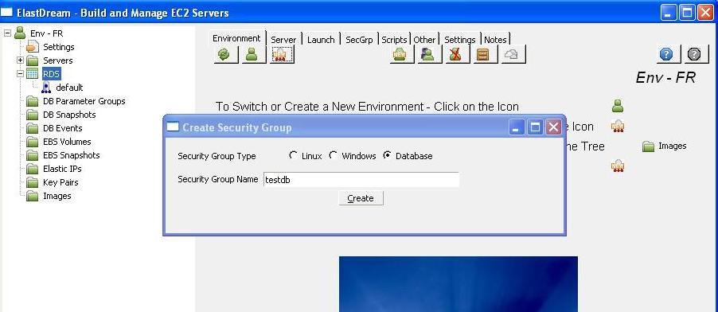
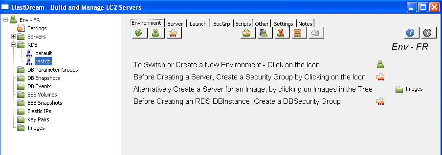
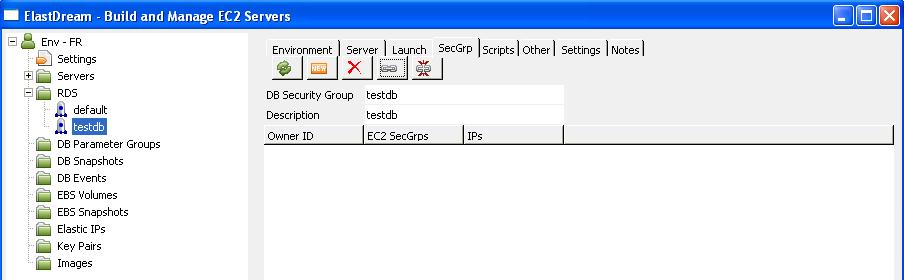
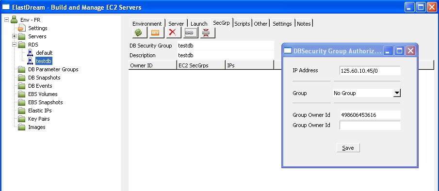
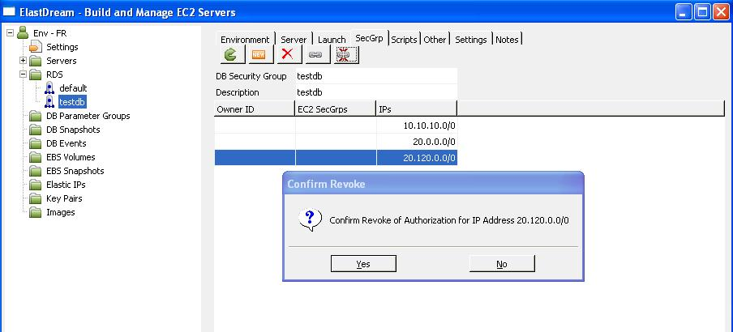

> Create DB Security Group.
Core Concepts
DB Security Group
The DB security group is analogous to a firewall that can block all incoming (ingress) and outgoing (egress) traffic that does not come in on a specific IP (specified by a CIDR) or port number range.
For more information on CIDRs, please visit http://en.wikipedia.org/wiki/CIDR.
Also the DB security group controls the access of other EC2 applications to the database via specifying EC2 security groups.
It is a good idea to have a separate DB security group for each DB instance and leave the default db security group empty.
.
Setting up a DB Security Group
Every launched RDS DB Instance needs a DB security group defined to specify what network traffic is allowed to reach the DB instance. If not specified Amazon RDS has a default DB security group that does not enable any traffic. We will create a new group called testdb. You might like to call the group another name that identifies your application.1. In the Environment tab click on the icon
2. Select Securityt Group type database and enter the name testdb (or another name that identifies your database) in the popup screen.

3. Press "Create" and the DB security group is created.
4. press the refresh button You will see a new reference to testdb in the RDS in the left-hand tree panel.

5. To add authorisations to the db security group click on the testdb in the tree view. Then click on the SecGrp tab to display the db security groups.

6. Create an authorization for your Ip address by clicking on the icon, entering your IP address and pressing save.

7. Authorizations are revoked by clicking on the icon.
